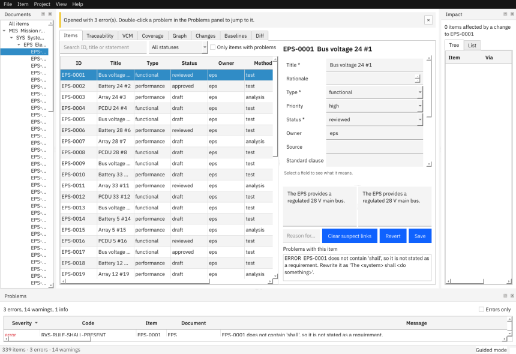
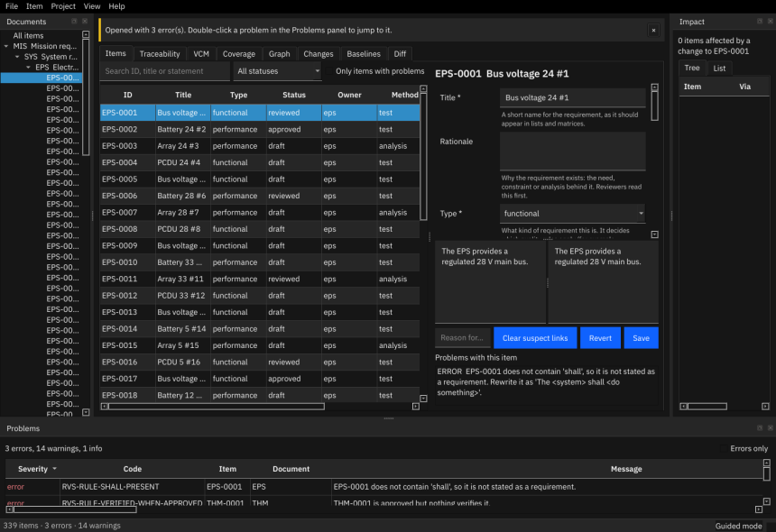
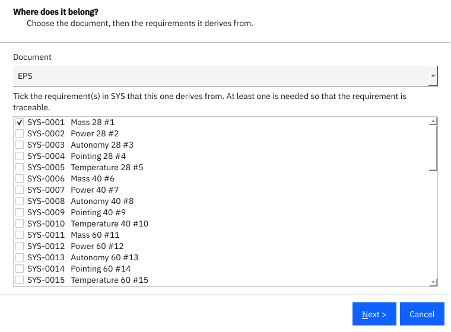
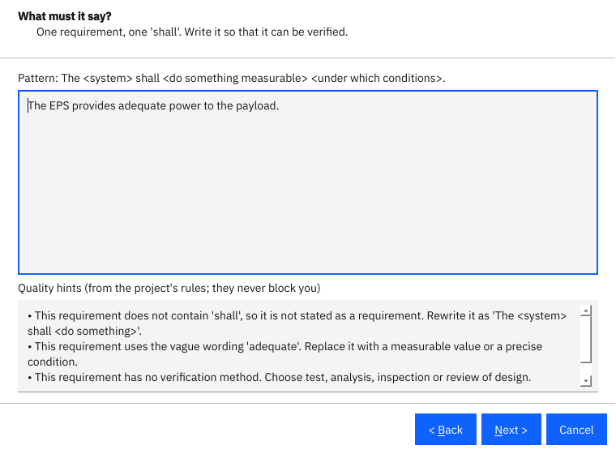
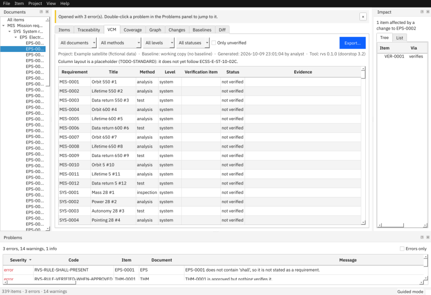
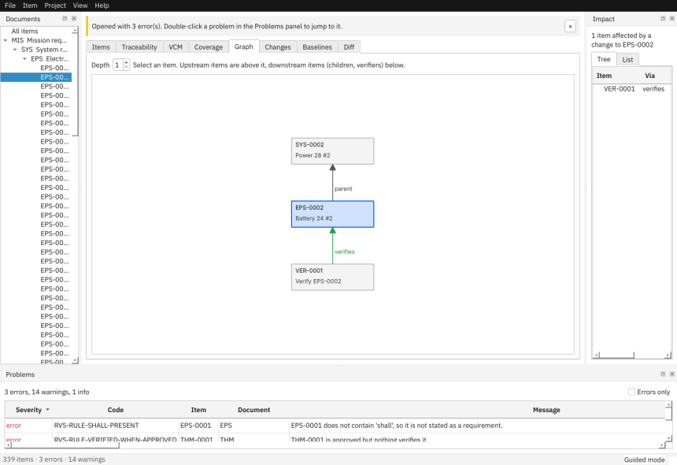
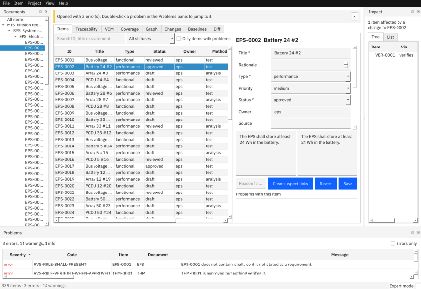

This guide is part of the application and works without a network connection. Press F1 in the application to open it. The same text is available on the command line with rvs guide.
Requirements & Verification Studio (RVS) manages requirements and their verification for engineering projects, with traceability, change control and baselines. Your data is stored as plain text files in a folder, so it can be kept under Git and read without RVS.
Nothing leaves your computer. RVS never connects to a network: there is no update check, no telemetry and no cloud service.
Run the installer for your system (see Installation and checks below) and start Requirements & Verification Studio from the application menu, or run rvs-studio in a terminal.
Choose one of three ways:
The same from the command line: rvs init my-project --name "My project" --template satellite --git.

RVS starts in guided mode: a step-by-step wizard for new requirements, an explanation of the field you are editing and a roomy table. When you know the tool, switch to expert mode with View > Mode or Ctrl+Shift+M: a dense table you can edit directly, and the quick "new item" dialog. Your choice is remembered.
| Guided | Expert | |
|---|---|---|
| New requirement | Wizard with live quality hints | Small dialog (document, title, parents) |
| Field help | Shown under every field | Tooltips only |
| Item table | Read-only, comfortable rows | Dense rows, edit cells in place |
Both modes use the same data and the same rules; nothing is hidden in guided mode.
View > Theme switches between a light theme, a dark theme and Follow the system. The choice is remembered.

On Linux, unpack the release and run ./install.sh (it installs for your user only and needs no administrator rights). On Windows, run the installer, which also installs for your user. ./uninstall.sh removes the program and leaves your projects and settings untouched.
rvs selftest checks the installed program: bundled fonts and configuration, a sample project, an export in every format (ReqIF included), a baseline in a scratch Git repository, and that the offline guard is active. It prints one line per check and exits with 0 when everything is fine. rvs selftest --manifest <folder> also verifies every installed file against MANIFEST.sha256, which shows whether files were damaged or altered after installation.
Preferences (mode, recent projects, shortcut overrides, window size) are in a small settings.json in your user configuration folder (~/.config/rvs on Linux, %APPDATA%\rvs on Windows). Set RVS_CONFIG_DIR to use another folder. This file never contains project content.
RVS shows a plain message and writes a short report to the crash folder next to settings.json. The report contains the error type and program locations only, never requirement text, so it is safe to send to the maintainers. Your saved project files are not affected.
This walkthrough uses the Small satellite example (File > Open Example). Everything in it is fictional.
Click EPS in the Documents panel. The table shows the electrical power subsystem requirements. Select one: the editor on the right shows its statement, its fields (a help line explains the one you are in) and Problems with this item.
Use Ctrl+F to search by ID, title or statement, the status box to filter, and Only items with problems to see what needs attention. Ctrl+G jumps to an ID. F8 and Shift+F8 step through the items that have problems.
Press Ctrl+N (or Item > New Requirement…). The wizard has five steps:


The new item is selected in the editor and a green message names the IDs that were created.
Select an item, change fields or the statement (the preview shows the formatted Markdown), and press Ctrl+S. Ctrl+R reverts.
Open the Problems panel. Each row has a code, the item, a message and How to fix. Examples: RVS-RULE-SHALL-PRESENT (add "shall"), RVS-LINK-SUSPECT (a parent changed; review and clear), RVS-RULE-UNDEFINED-ACRONYM (add the acronym to the glossary with Project > Glossary and Acronyms…, Ctrl+Shift+G). Run Full Doorstop Validation (Ctrl+Shift+V) additionally runs Doorstop's own tree checks.
Traceability shows which items of one document are linked from another, in both directions.

VCM lists every requirement with its verification method, level and the verification items that cover it. Rows with gaps are shaded. Filter by document, method, level or status.

File > Export… (Ctrl+E) writes a matrix, a specification document or the items table in HTML, DOCX, PDF, XLSX, CSV or JSON. Exports run in the background and name the project, the baseline (or "working copy") and the date.
Raise a change request in the Changes tab, tick Attribute my edits to this change request and every edit you make is recorded against it. When a milestone is reached, create a baseline with Project > New Baseline…. See Change control for details.
Switch to expert mode with Ctrl+Shift+M (or View > Mode). The status bar shows Expert mode.
| Task | Keys |
|---|---|
| Search items | Ctrl+F, type, Down to the table |
| Go to an ID | Ctrl+G, type the full ID (upper or lower case) |
| New requirement | Ctrl+N: document, title, parents (IDs complete as you type) |
| New verification item | Ctrl+Shift+N: the requirements it verifies |
| Save, revert | Ctrl+S, Ctrl+R |
| Next / previous problem | F8, Shift+F8 |
| Switch tabs | Ctrl+1 … Ctrl+8 |
| Refresh | F5 |
The complete list is in Keyboard shortcuts at the end of this guide, and in Help > Keyboard Shortcuts. To change a shortcut, add it under "shortcuts" in settings.json, for example {"shortcuts": {"export": "Ctrl+Alt+E"}}.
In expert mode, double-click a cell (or press F2) to edit it in place. Editable columns: Title, Type, Status, Priority, Owner, Method, Level. Enumerated columns open a drop-down with the project's vocabulary; a value outside the vocabulary is refused with a message. Every cell edit is a normal edit: it is saved immediately, checked by the rules and recorded in the item's history. If the item is baselined, RVS asks for the reason first.

Show more columns through View > Columns or by right-clicking the table header (for example Parents, Statement, Document, Priority).
For changes to many items, export the items table, edit it in Excel and import it:
rvs export my-project --items --format xlsx -o items.xlsx
rvs import my-project items.xlsx --dry-run
rvs import my-project items.xlsx --reason "Re-numbered after review"
The dry run lists, per row, whether an item would be created, updated or left unchanged, and every row-level error. Nothing is written unless the whole file is clean, or you pass --skip-errors. In the GUI use File > Import Items….
Every operation of the application is also available on the command line (see Command reference). rvs validate returns exit code 0 (no errors), 1 (errors, or warnings when --strict is given) or 3 (the project cannot be loaded), which suits a build pipeline:
rvs validate my-project --format json --strict
Opening a project with several thousand items takes a couple of seconds (5,000 items: about 2 s the first time, under 1 s afterwards); RVS keeps a cache in .rvs-cache (it is ignored by Git and by Doorstop) so later opens are quicker. The Problems panel and tables remain responsive while exports and project opening run in the background.
RVS supports a light configuration-management workflow: change requests that record why things changed, baselines that freeze an agreed state, and a comparison between any two states.
A change request (CR) is a small file changes/CR-0001.yaml with a title, a description, the affected items and a status log. Create one in the Changes tab (fill in the form, press New) or with rvs cr new.
open, in-review, approved, implemented, closed, rejected, deferred. They are configuration (config/changes.yaml); the names are a starting point to adapt to your own process.--cr CR-0001 to rvs import) and the item history records the CR for every edit. The tab lists the items edited under a CR.Once an item is baselined, every edit needs a reason (the statuses that require one are configurable: change_control.reason_required_statuses in config/rules.yaml): a box in the editor, a prompt for in-table edits, --reason for imports. The reason is stored in the item's history (the history/ folder of the project) together with who, when and which fields changed.
A baseline is a named, immutable snapshot of the whole project, for example SRR or CDR. Create one with Project > New Baseline… (Ctrl+Shift+B) or rvs baseline create.
What happens:
--defer CR-0001="after SRR").baselines/<name>.yaml records a content digest of every item.rvs/baseline/<name> (an annotated tag). This needs the project to be in a Git repository; the dialog and --init-git can create one. RVS never signs commits and never talks to a remote: pushing is up to your normal Git workflow.rvs baseline verify <project> <name> checks that the manifest still matches the tagged content. Tampering is also reported by rvs validate (RVS-BASELINE-MODIFIED for a changed manifest, RVS-BASELINE-CORRUPT for content that no longer matches it, RVS-BASELINE-NOTAG for a missing tag).
Every export names the baseline it comes from. rvs export … --baseline SRR produces any matrix or document as it was at that baseline, using the configuration of that time.
The Diff tab (or rvs diff <project> <left> <right>) compares two baselines, or a baseline and the working copy (working). It lists added, removed and changed items, and for changed items shows each field before and after. Statements are compared word by word: deletions are struck through, insertions underlined. Export the comparison as HTML, DOCX, PDF, CSV or JSON. The Baselines tab has a Compare with working copy button.
When a parent item changes after a child was reviewed, the link from the child is suspect (RVS-LINK-SUSPECT). Review the parent, then use Clear suspect links in the child's editor. RVS never clears suspect links on its own, and changing only the status of a parent does not make links suspect.
| Content | Command | Formats |
|---|---|---|
| Verification control matrix (VCM) | --vcm |
csv, json, xlsx, html, docx, pdf |
| Traceability matrix between two documents | --trace SRC:DST (optionally :up or :down) |
same |
| Coverage per document | --coverage |
same |
| Impact of changing one item | --impact UID |
same |
| Specification document(s) | --spec [--document PREFIX] |
html, docx, pdf |
| All items as a table | --items |
csv, xlsx |
| Exchange file for other tools | --reqif [--document PREFIX] |
reqif |
Binary formats (xlsx, docx, pdf) need an output file (-o file). Filters narrow the VCM: --document, --method, --level, --status, --only-gaps. Add --baseline NAME to export the state at a baseline.
Every output carries its provenance: project, baseline (or working copy), date, user, and tool versions. Files are reproducible: exporting the same state twice gives byte-identical files when the date is the same.
The VCM layout is a neutral placeholder. It will be aligned with ECSS wording only once you supply the standard's text (TODO-STANDARD in config/standards.yaml).
rvs import and File > Import Items… read a CSV or XLSX table written by export --items. You can edit it in a spreadsheet and bring the changes back.
id and title columns updates only titles.Always run --dry-run first on a large file.
ReqIF (OMG Requirements Interchange Format) is the file format most requirements tools (DOORS, Polarion, Jama and others) can read and write. In the application choose File > Export… with content ReqIF exchange file, or on the command line rvs export PROJECT --reqif -o project.reqif. Add --document PREFIX for part of the project.
What the file contains:
satisfies, verifies, refines and conflicts-with. Relations that point outside the exported documents are left out.Importing a ReqIF file works like importing a table, with the same dry run, checks, history and reasons: rvs import PROJECT file.reqif --dry-run, or File > Import Items…. Files written by RVS come back exactly as they were. Files from other tools are matched as follows:
--document PREFIX (the application asks).Title, Owner, Status, Priority and so on; ReqIF.Name and ReqIF.ChapterName become the title, ReqIF.Text the statement). Use --map "Their name=column" (repeatable) for others. Attributes that match nothing are listed and not imported.parent and of the typed link names are imported when both ends are in the file. Other relation types are listed and skipped, and a parent relation inside one document is skipped because parent links go to the parent document.RVS refuses files with DOCTYPE or entity declarations. The files RVS writes follow the ReqIF 1.2 structure but could not be checked against the official XSD offline; if a tool rejects one, please send the tool's message.
rvs is the command line of the application. All commands work offline and never change a project unless they are meant to (init, import, cr, baseline create). Exit codes: 0 success, 1 problems found, 2 wrong usage, 3 the project cannot be loaded.
rvs validate PROJECT [--format text|json] [--strict] [--fast]
Checks a project: file format, configuration, links, quality rules, change requests and baselines. --strict counts warnings as errors. --fast skips Doorstop's own tree validation (RVS checks still run), which matters for very large projects. --format json lists each finding with code, severity, item, message and how to fix it.
rvs init FOLDER [--name NAME] [--template minimal|satellite|software] [--git] creates a new project from a template; rvs init --list-templates shows the templates and what they contain. --git also creates a Git repository in the folder.
rvs export PROJECT (--vcm | --trace SRC:DST[:up|down] | --coverage | --impact UID | --items | --spec | --reqif) [--format csv|json|xlsx|html|docx|pdf] [-o|--output FILE] [--document PREFIX] [--method M] [--level L] [--status S] [--only-gaps] [--baseline NAME]
See Import and export. Without -o text formats are written to standard output.
rvs import PROJECT FILE [--dry-run] [--skip-errors] [--reason TEXT] [--cr CR-ID] [--user NAME] [--document PREFIX] [--map NAME=COLUMN]
Imports a CSV or XLSX table of items, or a ReqIF file (--document and --map apply to ReqIF only; see ReqIF exchange). --dry-run shows the plan and writes nothing. Exit code 1 means rows had errors.
Change requests.
rvs cr new PROJECT TITLE [-d|--description DESCRIPTION] [--item UID]… [--user NAME] raises a change request.rvs cr list PROJECT lists them with their status.rvs cr show PROJECT CR-ID shows one, with its status log and the items edited under it.rvs cr status PROJECT CR-ID STATUS [--note TEXT] [--user NAME] moves it to another status.rvs cr defer PROJECT CR-ID --reason TEXT [--user NAME] defers it so it does not block baselines.rvs baseline create PROJECT NAME -m|--message MESSAGE [--defer CR-ID=REASON]… [--init-git] [--user NAME] creates a baseline.rvs baseline list PROJECT [--format text|json] lists baselines.rvs baseline verify PROJECT NAME checks a baseline against its manifest and tag.rvs diff PROJECT LEFT RIGHT [--document PREFIX] [--format text|json|csv|html|docx|pdf] [-o|--output FILE]
LEFT and RIGHT are baseline names or working.
rvs selftest [--manifest FOLDER] checks the installation; see Installation and checks.
rvs guide [-o|--output FILE] prints where the offline user guide is, or copies it to FILE.
Prints the RVS and Doorstop versions.
| Shortcut | Action |
|---|---|
| Ctrl+O | Open a project folder |
| Ctrl+Alt+N | Create a new project from a template |
| Ctrl+I | Import items from CSV or XLSX |
| Ctrl+E | Export a matrix, specification or items table |
| Ctrl+Q | Quit |
| Ctrl+N | New requirement (wizard in guided mode, quick dialog in expert mode) |
| Ctrl+Shift+N | New verification item |
| Ctrl+S | Save the item being edited |
| Ctrl+R | Revert the item being edited |
| Ctrl+F | Search items (focus the search field) |
| Ctrl+G | Go to an item by ID |
| F8 | Jump to the next problem |
| Shift+F8 | Jump to the previous problem |
| F6 | Move the focus to the Problems panel |
| F5 | Reload and re-check the project |
| Ctrl+Shift+V | Run Doorstop's full validation |
| Ctrl+Shift+B | Create a baseline |
| Ctrl+Shift+G | Edit the glossary and acronym list |
| Ctrl+Shift+M | Switch between guided and expert mode |
| F1 | Open the user guide |
| Ctrl+/ | Show this list of shortcuts |
| Ctrl+1 | Show tab 1 |
| Ctrl+2 | Show tab 2 |
| Ctrl+3 | Show tab 3 |
| Ctrl+4 | Show tab 4 |
| Ctrl+5 | Show tab 5 |
| Ctrl+6 | Show tab 6 |
| Ctrl+7 | Show tab 7 |
| Ctrl+8 | Show tab 8 |
A project is a folder:
my-project/
rvs-project.yaml project name, documents (prefix, kind, parent) and optional free attributes
config/ configuration, one file per topic (see below)
SYS/ SUB/ VER/ … one folder per document, one YAML file per item (SYS-0001.yml)
changes/ change requests (CR-0001.yaml)
baselines/ baseline manifests (SRR.yaml)
history/ per-item edit history (who, when, which fields, why)
.rvs-cache/ disposable speed-up cache; ignored by Git and by Doorstop
Items are plain YAML written by Doorstop 3.2; the statement is the text field (Markdown). Item IDs look like SYS-0012. Typed links are stored in the linking item as lists of IDs (link_satisfies, link_verifies, …); parent links are Doorstop's links.
Everything can be edited with a text editor, and diffed and merged with Git. RVS rewrites only the files of the items it changes.
All files live in config/, are validated against a schema when the project opens, and carry an rvs_schema_version. Files from an older version are migrated; files from a newer version are refused with a message. Missing files fall back to defaults and are reported as RVS-CONFIG-DEFAULTED.
| File | Purpose |
|---|---|
config/numbering.yaml |
Item ID format: separator, digits, per-document overrides |
config/vocab.yaml |
Allowed values for type, priority, status, verification method, level and verification status |
config/templates.yaml |
Attributes per document kind (requirements, verification): type, required, vocabulary, help text, defaults |
config/rules.yaml |
Quality rules, their severity, parameters and whether they are enabled; which statuses need a reason for change |
config/links.yaml |
Typed links (satisfies, verifies, refines, conflicts-with): attribute, allowed source and target kinds |
config/exports.yaml |
Column layouts of the VCM and traceability exports, provenance fields |
config/standards.yaml |
Standards references; values not yet supplied stay TODO-STANDARD |
config/glossary.yaml |
Terms and acronyms (edit with Project > Glossary and Acronyms…) |
config/changes.yaml |
Change request statuses, which ones block a baseline, and what happens to item statuses at a baseline |
To add a field to every requirement, add an attribute to config/templates.yaml; the editor, the wizard, imports and exports pick it up. Use TODO-COMPANY or TODO-STANDARD to mark values your organisation still has to decide; RVS reports them until replaced (RVS-STD-PLACEHOLDER) and never invents standard text.
Configured in config/rules.yaml. Each rule has an ID, a severity (error, warning or info) and parameters. A finding's code is RVS-RULE- plus the ID in capitals.
| Rule | Code | Default | What it checks |
|---|---|---|---|
shall-present |
RVS-RULE-SHALL-PRESENT |
error | The statement uses "shall". |
single-statement |
RVS-RULE-SINGLE-STATEMENT |
warning | One requirement per statement (at most one "shall"). |
vague-words |
RVS-RULE-VAGUE-WORDS |
warning | None of the configured vague words is used. |
no-implementation |
RVS-RULE-NO-IMPLEMENTATION |
warning | A functional requirement does not prescribe a design. |
verify-method-set |
RVS-RULE-VERIFY-METHOD-SET |
warning | A verification method is set. |
has-parent |
RVS-RULE-HAS-PARENT |
error | The item has a parent unless it is in the root document. |
verified-when-approved |
RVS-RULE-VERIFIED-WHEN-APPROVED |
error | An approved item has at least one verification link. |
undefined-acronym |
RVS-RULE-UNDEFINED-ACRONYM |
warning | Acronyms used in text are defined in the glossary. |
One further code belongs to the rule machinery: RVS-RULE-UNKNOWN (rules.yaml enables a rule that this version does not provide).
Every problem has a stable code, a message and a hint on how to fix it.
| Code | Meaning |
|---|---|
RVS-PROJECT-MISSING |
The project folder or a file it needs (such as rvs-project.yaml) does not exist. |
RVS-CONFIG-YAML |
A configuration file is not valid YAML. |
RVS-CONFIG-INVALID |
A configuration file does not match its schema. |
RVS-CONFIG-DEFAULTED |
A configuration file is missing; defaults are used. |
RVS-SCHEMA-MISSING |
A file has no rvs_schema_version (for an item it is treated as the current version; add rvs_schema_version: 1). |
RVS-SCHEMA-MISSING-FATAL |
Reserved: a file without a schema version that cannot be read at all. |
RVS-SCHEMA-INVALID |
The schema version is not a whole number. |
RVS-SCHEMA-OLDER |
A file is from an older version and was migrated in memory; saving writes the current version. |
RVS-SCHEMA-NOMIGRATION |
A file is older but no migration exists. |
RVS-SCHEMA-NEWER |
A file is from a newer version of RVS and is refused. |
RVS-TREE-INVALID |
The document tree cannot be read by Doorstop. |
RVS-ITEM-UNREADABLE |
An item file cannot be parsed, usually because a hand edit broke the YAML. The message names the file and the line; fix it and open the project again. |
RVS-ITEM-NAME |
An item file is not named like an ID of its document (for example SYS-0001 copy.yml, or an item of another document in this folder). Rename or remove it. |
RVS-VALIDATION-FAILED |
Validation stopped unexpectedly, usually because a hand-edited file has content RVS cannot interpret. The message names the kind of error only; check recent edits with git diff. |
RVS-DOC-MISSING |
A declared document has no folder. |
RVS-DOC-UNDECLARED |
A folder is a Doorstop document but is not declared in rvs-project.yaml. |
RVS-DOC-PARENT |
A document's parent differs from the declaration. |
RVS-DOC-FORMAT |
A document does not use YAML item files (warning). |
RVS-DOC-NUMBERING |
A document's ID format differs from config/numbering.yaml. |
RVS-DOC-FINGERPRINT |
A document's list of reviewed attributes differs from the template, so suspect-link detection would behave differently. |
RVS-ATTR-REQUIRED |
A required attribute is empty. |
RVS-ATTR-TYPE |
An attribute has the wrong type (for example a number where a list is expected). |
RVS-ATTR-UNKNOWN |
An item has an attribute that the template does not define; declare it under free_attributes in rvs-project.yaml or remove it. |
RVS-ATTR-VOCAB |
An attribute value is not in the project vocabulary. |
RVS-LINK-TARGET-MISSING |
A link points to an item that does not exist. |
RVS-LINK-KIND |
A typed link connects document kinds it may not connect. |
RVS-LINK-SELF |
An item links to itself. |
RVS-LINK-SUSPECT |
A parent changed after this item was reviewed. |
RVS-LINK-METHOD-MISMATCH |
A verification item uses a different method than the requirement it verifies. |
RVS-TRACE-NO-CHILD |
A requirement has no child requirement in the documents below it (warning; ignore it if no allocation is needed). |
RVS-STD-PLACEHOLDER |
Values marked TODO-STANDARD or TODO-COMPANY are still in use (information). |
RVS-CR-INVALID |
A change request file is not valid. |
RVS-CR-ITEM |
A change request lists an item that does not exist (warning). |
RVS-CR-STATUS |
A change request has a status that is not configured. |
RVS-BASELINE-MODIFIED |
The manifest of a baseline was changed after the baseline was created. |
RVS-BASELINE-CORRUPT |
The tagged content of a baseline does not match its manifest. |
RVS-BASELINE-NOMANIFEST |
A baseline's Git tag exists but its manifest file is missing, so the baseline is no longer enforced. Restore the file from the tagged commit. |
RVS-BASELINE-NOTAG |
A baseline manifest exists but its Git tag is missing. |
Doorstop's own tree validation (Run Full Doorstop Validation, rvs validate without --fast) adds findings with codes starting DOORSTOP-: DOORSTOP-EMPTY-DOCUMENT (a document has no items yet: normal in a new project), DOORSTOP-NO-CHILD-LINKS, DOORSTOP-SUSPECT-LINK, DOORSTOP-UNREVIEWED, and DOORSTOP-WARNING / DOORSTOP-ERROR for anything else Doorstop reports.
"The project could not be opened." Read the message: it names the file and what to fix. rvs validate PROJECT shows the same findings with codes.
A save is refused because of a reason. The item is baselined. Type why you are changing it.
Baseline creation fails. Open change requests must be closed or deferred; and the project must be in a Git repository (the dialog offers to create one).
The window seems slow on a big project. The first open builds the cache; later opens are faster. Only items with problems and the document tree reduce what is shown.
I do not see a network feature. There is none, by design.